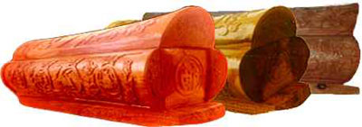

在我国流传着“生在苏州，穿在杭州，吃在广州，死在柳州。”的民彦，其中“死在柳州”，意为柳州棺材质优工巧、饮誉全国，逝候得一付足矣。
清末民初至解放前，柳州经营棺材寿板业者多在柳江河北岸的长寿街。全街铺店都摆满了棺材，尺寸大小及各种式样齐全，一般分大、中、小号三个等级，也有按顾客要求特制的，以木质好坏和技术之优劣而定价高低不同，生意非常火红。当时未有火葬，不论是官是民，死后均装棺土葬，因此，棺材经营行业倒也方便了民需。
柳州棺材量多质好，有赖于柳江河上游融水、三江两地盛产的木材，寿板所需材料源源不断从这些地方运往柳州。
柳州棺材式样多昂头雄壮，且头尾两面刻有龙风，雕有福鼠，雕刻不用图样而信手刻来，栩栩如生，异常精致。造棺之木最佳者为春芽木，质坚色黑发亮，敲之略有声，其次为柚木，质坚色红，不渗水，可防潮。以此两种木质作棺材，均能避免鼠咬蚁蛀，埋地百年不朽。
柳州棺材以其质地上乘，做工精致而名闻全国后，有人为死后得到一副好棺材，竟以“死在柳州”为幸事。1935年，曾任广州卫戍司令的陆军少将高景纯在柳州逝世，其家人为他定制一具特大号棺材，用一截重约一千余公斤的大棺木雕制，棺高为一点三三米，长二点三三米，头尾刻有双龙戏珠和五囚捧寿等浮雕。据说，这是柳州棺材史上最名贵的一具棺材。
如今，人们已经不再进行土葬，柳州棺材也不再有当年的风光，但是，柳州棺材作为工艺品仍广受人们的欢迎，其尺寸变小了，一些人购之作为家居摆设，亦喜其谐音“升官发财”之意。